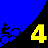
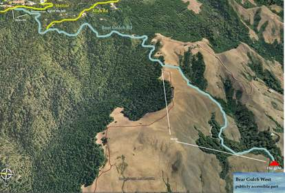

|  |
2008 Low-Key Hillclimbs Week 4: Bear Gulch 25 Oct 2008 |
|  |
| Aerial photo of Bear Gulch, courtesy of Stanford Cycling |
How many hundreds of times have you passed this one by? Hidden away off Skyline Boulevard, marking the top of the climb between Kings Mountain Road and Highway 84, Bear Gulch meanders a bit before descending, breathtakingly, to the gate which marks the private road which continues downward to Highway 84 approaching San Gregorio. We'll start near the top, near Skyline, and descend as a group to the gate, then the clock begins as we climb back to Skyline. Extremely low traffic, a variety of grades, and wonderful views that so often go neglected by those who are too easily deterred by out-and-back descents. Here's a wonderful chance to discover a hidden treasure in Bay Area cycling.
Our insurance demands it: helmets are required. Sorry kids, no exceptions!
We begin the day with registration at the entrance to the Skyline Trail in Wunderlich Park, between the intersections with Bear Gulch West and Bear Gulch East on Skyline Blvd. We'll gather there, then ride together to the beginning of Bear Gulch, where we'll descend carefully together to the bottom. Bear Gulch is a narrow road with more car traffic than you think! Take care.
There's many potential places to park along Skyline Blvd. However, please do so anywhere except Bear Gulch Road, as we don't want congestion there. Given the relative shortness of the climb, and the need for a good warm-up, a leisurely ride up 84 or Kings Mountain Road to Skyline, then from there up to Bear Gulch, is an excellent idea.
| stats | 2.81 miles, 886 feet, 6.0% |
| format | mass start |
| time | reg 9:15 - 10:00 start 10:10am |
| coordinator | |
| aerial view | Stanford Cycling |
| route profile | MapMyRide profile |
| weather | Weather Underground Weather Bonk |
| registration form |
PDF release form |
| entry fee | $10 voluntary donation free for juniors 2 free for volunteers free for coordinators |

{kind=link}
{kind=link}